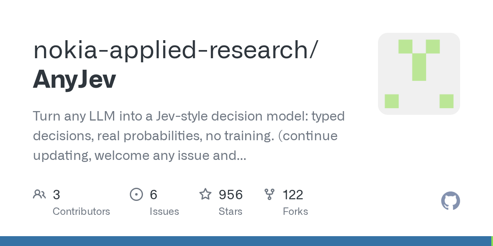

08 GitHub
nokia-applied-research/AnyJev
오픈 LLM을 확률형 판단기로 바꾸는 실험 도구
★ 956이번 주 +800PythonApache-2.0 사내 사용 가능릴리스 v0.2.0 (09.28)최근 활동 09.28테스트 있음예제 없음AGENTS.md 있음

이 저장소는 오픈 LLM을 확률형 의사결정 모델로 바꾸는 도구다. 만든 쪽은 선택형 질문, 예·아니오, 점수형 질문에 대해 생성 없이 판단과 확률을 읽어 낼 수 있다고 설명한다. Nokia 연구진과 Tencent Hunyuan 소속 저자가 함께 올렸다. 이번 주에는 v0.2.0이 공개됐다.
무엇을 하는 물건인가
이 도구는 언어모델에게 긴 답변을 쓰게 하지 않고, 정해진 보기 중 무엇을 고를지와 그 확률을 뽑아내게 한다. 고객 문의 분류나 담당 부서 배정처럼 선택형 판단에 맞춘 구조다. 이 도구가 없으면 모델이 쓴 문장을 다시 읽어 분류 결과를 파싱하고, 확률값도 따로 믿기 어렵다. 설문 답안을 자유서술로 받은 뒤 사람이 다시 항목별로 정리하던 일을 줄이는 방식이다.
스펙과 도입 조건
- 언어는 Python이다.
- pip 패키지 형태로 설치한다.
- vLLM대규모 언어모델 서빙 도구 백엔드를 지원한다.
- transformers 백엔드도 언급돼 있다.
- Docker 이미지는 안내돼 있지 않다.
- GPU가 없어도 synthetic backend로 데모를 돌릴 수 있다.
- 라이선스는 Apache-2.0이다.
- 최신 릴리스는 v0.2.0이며 2026-09-28에 공개됐다.
- 테스트는 있다.
이럴 때 쓰면 좋다
- 고객 문의를 청구, 기술, 영업, 기타 같은 고정된 범주로 나누고 자동 처리 기준 확률을 정할 때 유용하다.
- 심사 보조 화면에서 승인, 보류, 재검토 같은 선택지를 모델이 얼마나 자신 있게 고르는지 수치로 보고 싶을 때 맞다.
- 규정 문서 검토에서 예외 여부를 예·아니오로 판정하고 낮은 확신 건만 사람에게 넘기는 흐름을 시험할 때 쓸 수 있다.
핵심 기능
- 선택형, 예·아니오, 점수형 질문에 대해 확률 분포를 낸다.
- 라벨이 없을 때도 보기 순서 편향을 줄이는 적응형 회전 기능을 쓸 수 있다.
- 적은 라벨로 질문별 판별 헤드head — 모델 위에 붙여 특정 판단을 읽어 내는 작은 층를 맞추고 이후에는 비라벨 트래픽으로 보정 상태를 유지한다.
성능과 운영 비용
이 저장소는 속도와 정확도, 보정 수치를 함께 공개했다. 적응형 회전을 켜면 18개 보기를 모두 읽지 않아도 평균 7.2회 회전으로 멈췄다. 이 조건에서 vLLM은 초당 판단 수가 2.2배가 됐고, transformers 백엔드는 2.3배~2.7배가 됐다. 만든 쪽은 정확도는 바뀌지 않았다고 적었다.
L2 배포는 풀링 서버와 수 킬로바이트 크기의 헤드만 있으면 된다고 밝혔다. 로짓logit — 모델이 각 답 후보에 주는 원시 점수 파싱이나 엔진 수정이 필요 없다는 설명도 덧붙였다. transformers에서 맞춘 헤드를 vLLM으로 서빙해도 BANKING77-20에서 답이 99.0% 같았고, 평균 |dp|는 0.0011이었다. 배포 경로를 바꿔도 출력 차이가 작다는 뜻이다.
깊이를 줄이는 쪽이 손해만은 아니라고 적었다. Qwen2.5-7B를 28개 블록에서 18개 블록으로 줄였더니 정확도는 약간 올라가고 보정도 좋아졌으며 속도도 빨랐다. 마지막 블록보다 중간 블록이 선형 헤드에 더 나은 특징 공간일 수 있다고 설명한다.
문서에는 제한도 함께 적혀 있다. typed-decisions의 정확도는 교사 LLM과의 일치율이다. 금 정답이 아니라는 뜻이다. 26개 초과 보기, 다른 엔진 지원, 에이전트 루프 안에서의 평가는 아직 남아 있다.
| 항목 | 수치 | 조건 또는 뜻 |
|---|---|---|
| 평균 회전 수 | 7.2 | 18개 보기 대신 적응형 회전 사용 |
| 처리량 향상 | 2.2배 | vLLM에서 초당 판단 수 |
| 처리량 향상 | 2.3배~2.7배 | transformers 백엔드 |
| 출력 일치율 | 99.0% | BANKING77-20에서 학습과 서빙 경로를 달리한 비교 |
| 평균 |dp| | 0.0011 | BANKING77-20 비교 |
| 깊이 축소 | 28개 블록 → 18개 블록 | Qwen2.5-7B 절단 예시 |
사내 도입 체크
- 오픈 LLM과 vLLM, transformers를 붙여 쓰는 구조라 외부 API 없이 내부 모델로도 운영할 여지가 있다.
- 다만 어떤 모델을 어디에 둘지는 문서만으로 확정할 수 없어 데이터 반출 여부는 배포 방식에 따라 달라진다.
- 유지보수 주체는 Nokia Applied Research 중심의 조직형 프로젝트로 보인다.
- 고객 문의 분류나 라우팅 솔루션 같은 상용 대체재는 많지만, 이 저장소는 질문별 확률 보정과 경량 배포를 앞세운다.
주요 용어
원문 정보
제목: nokia-applied-research/AnyJev
최근 활동: 2026.09.28